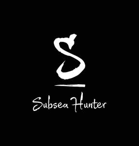

Trade Mark Journal No.2025/031 1 August 2025
UK00004235591 17 July 2025 (8,9,25,28)

- Class 8
- Harpoons for fishing; Fishing (Harpoons for -); Fishing knives; Diving knives; Fishing pliers; Diving knife holders.
- Class 9
- Diving snorkels; Scuba diving masks; Diving equipment; Goggles for scuba diving; Weight belts [for scuba diving]; Weight belts for scuba diving; Scuba snorkels; Scuba goggles; Diving goggles; Swim goggles; Snorkels; Lifejackets; Swim masks; Gloves for divers; Diving suits.
- Class 25
- Fishing vests; Fishing headwear; Fishing jackets; Fishing shirts; Fishing clothing; Vests (Fishing -); Fishing footwear; Fishing boots; Swimsuits; Swim shorts; Waterproof jackets; Swimming suits.
- Class 28
- Fishing equipment; Hunting and fishing equipment; Bags for fishing; Lures for hunting or fishing; Rods for fishing; Fishing rods; Reels for fishing; Fishing reels; Fishing tackle bags; Fishing tackle; Fishing weights; Lures for fishing; Fishing lures; Spearfishing guns for scuba diving; Spearfishing harpoon guns [scuba equipment]; Spears for use in fishing; Scent lures for hunting or fishing; Scuba fins; Hooks for fishing; Fishing hooks; Poles for fishing; Fishing poles; Fish hook removers being fishing tackle; Fishing rod supports; Swim fins; Fishing tackle boxes; Decoys for hunting or fishing; Flippers for scuba diving; Fishing sinkers; Fishing gaffs; Tackle (Fishing -); Fishing tippets; Fishing creels; Lures (Scent -) for hunting or fishing; Fishing harnesses; Fishing swivels; Spring activated spearguns [scuba equipment]; Swivels [fishing tackle]; Fishing spinners; Flippers for diving; Fishing plugs; Artificial baits for fishing; Fishing ground baits; Floats for fishing; Fishing floats; Tungsten weights for fishing; Fishing tackle floats; Scuba flippers; Surf fins; Fishing reel cases; Fishing bait [synthetic]; Fishing leaders; Lures [artificial] for fishing; Bait (Artificial fishing -); Artificial fishing bait; Fishing rod shaped game controllers for fishing games; Swimming jackets.
Tajeddine Arslan